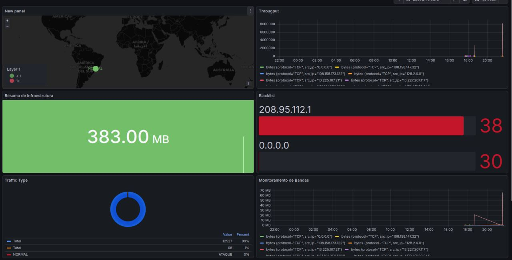
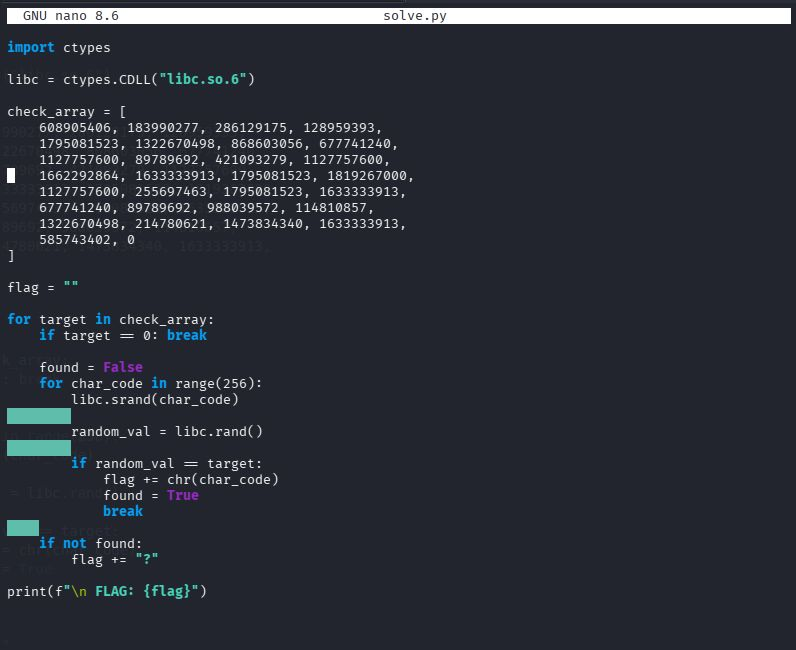
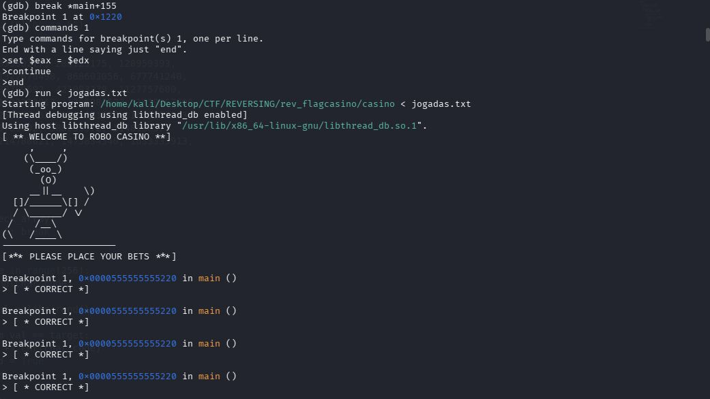
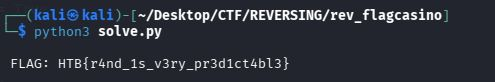

$ whoami
$ cat role.txt
$ nmap -sV --script=skills target
PenTest | Exploit Dev | Red Team | CTF Player
$ _
Estudante de Ciencia da Computacao com foco em Pentest e Seguranca Ofensiva.
Certificado como Junior Cybersecurity Analyst (Cisco) e Metasploit Framework Expert (Hackers Hive). Experiencia pratica em exploracao de vulnerabilidades, analise de trafego de rede e CTFs (Top 25% NahamCon 2025). Desenvolvedor do Network Traffic Analyzer, um IDS de alto desempenho em C11 com deteccao de intrusao em tempo real.
Atualmente na Fagron Technologies, atuando com gestao de identidade e acessos, resposta a incidentes e automacao de processos via Azure DevOps e Power Automate.
Jan 2026 · Expira Jun 2029
ISO 17024 Ready · Certificado ProfissionalDez 2025 · Expira Dez 2028
ISO 17024 Ready · Certificado ProfissionalDez 2025 · Expira Dez 2028
ISO 17024 Ready · Certificado ProfissionalDez 2025
Certificado ProfissionalJan 2025 · Expira 2029
Certificado ProfissionalJan 2026
Dez 2025
Dez 2025
Set 2025
Jan 2025
Jan 2025
Jan 2025
Set 2025
Dez 2025
Red Team · OfensivoFaculdade Unianchieta
2025 – 2028
Cursando — 3o semestreEscolas Padre Anchieta
2022 – 2024
ConcluidoIDS de alto desempenho — Arquitetura Agent/Server
Sistema de Deteccao de Intrusao (IDS) escrito em C11, inspirado na arquitetura Agent/Server do Zabbix. Realiza captura de pacotes em modo promiscuo, deteccao de anomalias em tempo real, agregacao centralizada de telemetria via RabbitMQ e visualizacao em dashboards Grafana com dados InfluxDB. Suporta Linux (Ubuntu, Debian, Kali) e Windows via Npcap SDK.

Dashboard Grafana em producao — GeoIP · Blacklist · Throughput · Traffic Classification clique para ampliar
Captura de pacotes via libpcap, filtros BPF, parsing de headers TCP/UDP/ICMP.
RabbitMQ assíncrono, deteccao de port scans e ICMP floods, InfluxDB + GeoIP + Grafana.
Configuracao 100% via env vars, suporte TLS/SSL, cross-platform Linux & Windows, enumeracao de interfaces.
8+ vetores de ataque: SYN floods, Stealth scans, DNS tunneling, ARP spoofing, brute force, DDoS. Mapeamento MITRE ATT&CK.
pthreads independentes para captura/analise/publicacao. Throughput: 85k → 350k+ packets/sec.
VPS via Terraform, Nginx, Let's Encrypt TLS, dashboards production-ready.
LLM via Groq API para narrativas de incidentes legíveis, mapeamento MITRE ATT&CK e recomendacoes de remediacao.
MaxMind GeoIP2, AbuseIPDB, IoC matching. Captura zero-copy via AF_PACKET TPACKET_V3 para links 1Gbps+.



Desafio de Reverse Engineering no NahamCon 2025. Engenharia reversa de binario casino em Kali Linux: uso de GDB para dump dos valores esperados da funcao check(), seguido de script Python com ctypes para brute-force do seed correto de libc.rand() char a char.
204 / 855 teams
Competicao internacional de Capture The Flag — equipe N00bye. Desafios em web exploitation, cryptography, reverse engineering, forensics e OSINT. Primeira participacao, conquistando 1/25 challenges e pontuando entre os melhores 24% de 855 times.
Interessado em colaborar ou tem uma oportunidade? Entre em contato.